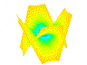

| DPGraph Free Updates |
| Home | Buy | Free Viewer | Legacy Site Licensees Latest news: 12 Nov 2017 | Update to newest version: 19 Dec 2016 Math Art Gallery | Documentation | Links | Privacy | Contact |
|  "Butterfly" (movie) by Jerry Thornhill. |
Updates to DPGraph are free. If you run into any problems updating to the newest version, please send email to support@dpgraph.com.
Individual purchasers: Click here to download UpdateDPGraph.exe, a program which will update your individual copy to the newest version. After you download it, if you are using Windows then run UpdateDPGraph.exe (or click on "Open" in the download dialog box) to complete the update. If you are using Linux, run the command wine UpdateDPGraph.exe
If UpdateDPGraph.exe doesn't work for you for any reason, simply email support@dpgraph.com to get a fresh new copy of DPGraph.
Free DPGraph Viewer: To update to the newest version of the free DPGraph Viewer, simply download and reinstall it.
Legacy site licensees: To update to the newest full version of DPGraph if your institution has a legacy site license, simply download and reinstall it.
Revision history:
19 Dec 2016: Fixed installation failure on Windows 8.1 OEM version.
5 Sept 2013: Adjusted scaling so that spheres should be spherical on all displays.
4 Jul 2008: Added min(x,y) and max(x,y) functions. The functions take two values and return the minimum or maximum value.
23 Apr 2008:Put in a workaround for a bug in some keyboard drivers which caused graphs to continue moving after the arrow keys were released.
11 Feb 2008: Fixed a problem with long file names that, under rare circumstances, caused the DPGraph installer to halt with an error code of C3C66941 000000CE.
26 Jan 2008: Implemented a work-around for a Windows Vista bug that caused DPGraph to crash when using the scrollbar. For the benefit of other developers who might run into a similar Vista bug, the SetScrollPos function erroneously sets the last error to Error_Call_Not_Implemented (120 decimal, 78 hexadecimal) when it returns a previous scroll position of 0 -- even if you zero the last error by calling SetLastError before SetScrollPos.
18 October 2004: For the benefit of Derive users, DPGraph now accepts [ and ] as equivalent to ( and ).
22 August 2004: For the benefit of Derive users, DPGraph now accepts #e in addition to e for 2.71828..., the base of natural logarithms.
18 November 2003: DPGraph now installs under limited accounts on Windows XP. Added code that prevents DPGraph from crashing when buggy memory-resident third-party programs leave floating-point interrupts enabled.
9 November 2001: Put in a workaround for a bug in Windows XP that caused previous versions of DPGraph to crash.
25 September 2001: The commands in DPGraph files can now extend over more than one line. There must be an opening parenthesis on the first line of the command, and a closing parenthesis on the last line. For example, the command
GRAPH3D( (X^2+Y^2+Z^2=9,SIN(X)+SIN(Y)=SIN(Z)) )
can now be written as
GRAPH3D( (X^2+Y^2+Z^2=9,
SIN(X)+SIN(Y)=SIN(Z)) )
This version also fixes some minor bugs. You can now use exponential notation for numbers (e.g. 1.856E3). Also, selecting 'By expression' on the Color menu doesn't cause crashes when displaying parametric graphs.
12 May 2001: Added several examples to the Parametric Curves and Surfaces directory.
10 May 2001: Fixed a bug that caused time-dependent parametric graphs to gradually eat up memory.
6 May 2001: Added support for 2D to 5D parametric curves and surfaces in rectangular, polar, cylindrical, and spherical coordinates. Also added ceiling and floor functions.
22 January 2001: Fixed the documentation to mention both ASCII and binary DPG files. Added more user contributed graphs, including a new folder called Optimal Geometry.
2 January 2001: Added support for binary DPG files, which are smaller than ASCII DPG files. Also released DPGraph Viewer, which can read binary DPG files.
12 December 2000: Changed the opening screen, changed the name from DPGraph 2000 to DPGraph, and unified the Linux and Windows versions into a single executable file.
26 November 2000: Fixed a bug that caused some vector fields to be displayed incorrectly when used in lists.
7 October 2000: You can now use mathematical expressions to specify the colors of surfaces and vectors. This enables DPGraph to display up to 8D graphs: 3D arrays of time-dependent 3D vectors, using color to encode another dimension of information (momentum, for example). For example, here is what you could type into a DPG file (by clicking on Edit inside DPGraph) to specify the color of a surface:
graph3d.color := sin(x)*sin(y)*sin(z)
and here is what you could type to specify the color of vectors:
graph3d.vectorcolor := sin(x)*sin(y)*sin(z)
You can even make the color vary with time. For example:
graph3d.color := (x+time)/6
To convert the expression to a color, DPGraph uses only the fractional part of the expression when evaluated at the current x, y, z, and time coordinates. This results in values that range from 0 to 1. These values are then mapped onto a color wheel that ranges from red at 0, through magenta, blue, cyan, green, yellow, and finally back to red again at 1.
13 August 2000: Found and fixed a bug in the Linux version that caused status information to be displayed in the middle of the main window, instead of at the bottom of the main window.
10 August 2000: This is the release of the first Linux version.
17 July 2000: Fixed a bug under older releases of Windows 95 that caused the OPEN and SAVE menu items to not work.
2 May 2000: Increased the maximum size of lines in DPGraph files from 1,500 characters to 36,000 characters. In the Edit dialog box, Windows may seem to break an extremely long line into several smaller lines each with about 1,000 characters, but internally it is still one long line.
4 April 2000: Added three new features that are handy for graphing vector fields. To put arrowheads on the vectors in a vector field, set GRAPH3D.VECTORARROWHEAD := TRUE (the default is FALSE). To change the alignment of the vectors with respect to the points at which they are defined, set GRAPH3D.VECTORALIGN to either CENTER or TIP (the default is TAIL). And finally, to view only selected vectors in a vector field, use the new NEAR function. NEAR(X,Y,Z) is 1 if the current grid point is near (X,Y,Z), otherwise NEAR is undefined. To select a subset of the vectors for display, multiply NEAR(X,Y,Z) times one of the elements of the vector. For example, to graph the VECTOR(2,3,1) with its tail near (0,0,0), do GRAPH3D( VECTOR( NEAR(0,0,0)*2,3,1 ) ). Handy trick: set GRAPH3D.RESOLUTION so that NEAR(X,Y,Z) is right on a grid point. For example, the if you are only interested in the vector NEAR(0,0,0), set GRAPH3D.RESOLUTION := 3. Another trick: the arguments to NEAR don't have to be constants. To graph a whole plane of vectors, try NEAR(X,0,0).
28 February 2000: Fixed a bug that caused DPGraph to occasionally freeze up.
23 February 2000: DPGraph can now graph 4D vector fields (three spacial dimensions, plus time). For example, to generate a 3D radial vector field type GRAPH3D( VECTOR( X/RHO/3, Y/RHO/3, Z/RHO/3) ) into the EDIT dialog box. RHO is the radius in spherical coordinates. For an example of a moving 4D vector field that might make you seasick, try GRAPH3D( VECTOR(-SIN(THETA+TIME)/6,COS(THETA+TIME)/6,0) ) and rotate it with the arrow keys till you are looking at it from the top. You might also want to set GRAPH3D.PERSPECTIVE:=FALSE so that the columns line up and GRAPH3D.VIEW:=TOP so that it automatically comes up in a top view. If you have a strong stomach, you can click on ANIMATE to continuously rotate the graph while it is seething. You can graph lists of vectors and you can combine vector fields with other types of surfaces. As with other types of surfaces, you can use the SCROLLBAR to slice through vector fields and change the shading and highlighting. You can also click on COLOR to change the color of the vectors. Click on OPEN to view DEFAULTS.DPG, which contains an example. DPGraph doesn't support vector math (yet!), so you can't add or subtract vectors. However, you can always do the additions and subtractions inside the VECTOR function. I've also added hundreds of pretty pictures from the DPGraph Library and added several handy new categories to the OPEN dialog box, including: Factoring, Surfaces of Revolution, Vector Fields, and Volumes of Integration.
13 November 1999: Added the ability to create implicit graphs in 2D polar coordinates, 3D cylindrical coordinates, and 3D spherical coordinates. The 2D polar coordinates are (R, THETA), the 3D cylindrical coordinates are (R, THETA, Z), and the 3D spherical coordinates are (RHO, THETA, PHI). The Cartesian equivalents are: R = SQRT(X^2+Y^2), THETA = ANGLE(-X,-Y)+PI, RHO = SQRT(X^2+Y^2+Z^2), and PHI = ANGLE(Z,SQRT(X^2+Y^2)). Added a new function called NONNEG. NONNEG(X) returns 1 if X>=0, otherwise it returns indefinite. Added a "continuous rotation" mode. To continuously rotate a graph, click on ANIMATE, then click on CONTINUOUSLY ROTATE. While the graph is rotating, all of the other ways to animate graphs still work, such as slicing or using TIME as a variable to create a movie. For a simple example of how to use these new features, here is how to create a movie of half of the pulsing sphere RHO=3*SIN(TIME/4)^2 for Y>=0: GRAPH3D( NONNEG(Y)*RHO = 3*SIN(TIME/4)^2 ), which will continue to pulse even if you continuously rotate it. Added a message when you open a file asking if you want to save any changes you've made to a previously opened file.
27 August 1999: Added two new functions that facilitate demonstrating surfaces of revolution. ANGLE(X,Y) returns the angle of (X,Y) with respect to the positive X axis in the range -PI<=ANGLE(X,Y)<=PI. ONE(X) returns 1 if 0<=X<=1, otherwise it returns indefinite.
25 August 1999: Added a SIGN function which returns -1 if the argument is negative, 1 if the argument is positive, or indefinite if the argument is zero or indefinite.
22 August 1999: Another minor improvement to the scrollbar.
21 August 1999: Improved the behavior of the scrollbar.
17 August 1999: Original release.
Copyright © 1997-2018 by DPGraph. All rights reserved.